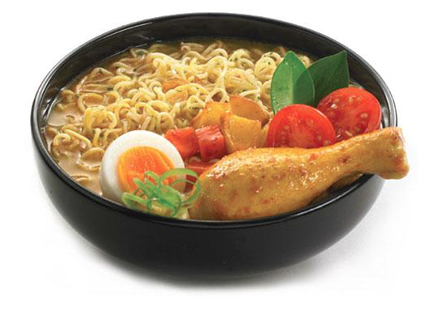

Indomie

Untuk kalian yang belum tahu menahu, merek makanan yang identik dengan anak kos ini pertama kali dirintis oleh Djajadi Djaja melewati PT Djangkar Djati, bersama dengan Wahyu Tjuandi, Ulong Senjaya, dan Pandi Kusuma. Pada bulan April tahun 1970, sebagai anak usaha dari PT Djangkar Djati, Djajadi Djaja mendirikan PT Sanmaru Food Manufacturing Co. Ltd lalu memperkenalkan merek baru yang bernama Indomie, singkatan dari Indonesia mie kepada publik pada tahun 1972.
Hingga saat ini, indomie diproduksi oleh Indofood CBP yang merupakan anak perusahaan dari Indofood Indonesia. Indofood ini merupakan produsen mie instan yang terbesar di dunia, dengan 16 pabrik, setiap tahunnya dapat memproduksi 15 miliar paket indomie!
Di luar pabrik utamanya di Indonesia, Indomie telah diproduksi di negara Nigeria sejak tahun 1995 dan produk tersebut merupakan produk yang populer di sana. Tak hanya itu, indomie juga diekspor ke lebih dari 60 negara di dunia. Pasar ekspor utama Indofood adalah negara Australia, Selandia Baru, Irak, Papua Nugini, Taiwan, Hong Kong, Timor Leste, Yordania, Arab Saudi, Amerika Serikat, dan negara-negara lain yang ada di Eropa, Timur Tengah, Afrika, dan Asia.
Ternyata, kenikmatan mie instan Indomie ini juga diakui oleh negara-negara lain lho! Dilansir dari indozone.id, Pada tahun 2019 silam, Indomie Barbeque Chicken produksi Indonesia dinobatkan sebagai mie instan terbaik dan paling enak sedunia. Menurut Lucas Kwan Peterson yang merupakan kolumnis makanan L.A Times, penilaian peringkat tersebut berdasarkan dua hal, yaitu rasa dan kesesuaian rasa pada iklannya.